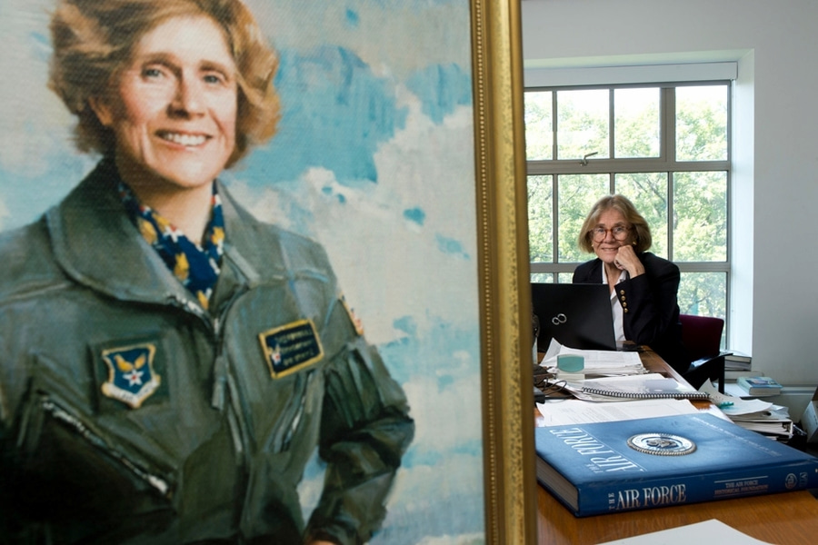
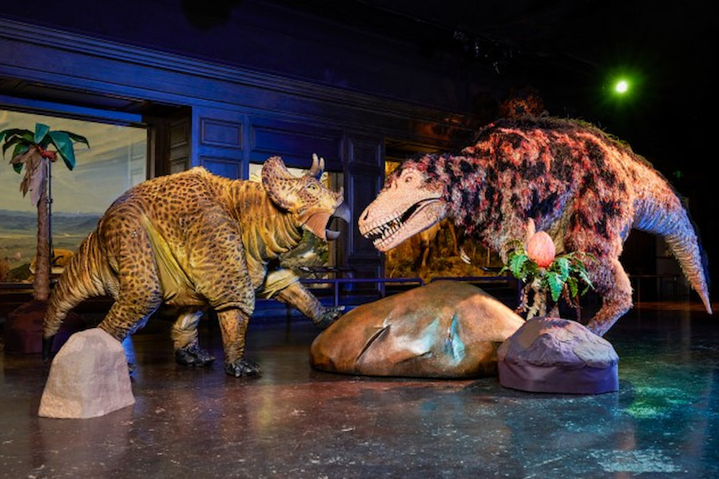
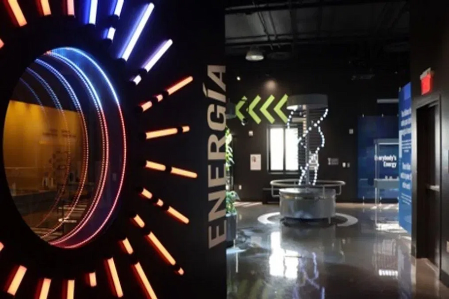

Visiting Professor of Aeronautics
It is our pleasure to announce that Prof Sheila Widnall from the
Massachusetts Institute of Technology will be delivering 3 lectures
on the development of aeronautics and where the future lies in this
exciting ‘space’.
23.-24.november/10.00-14.00

Night in the Museum
Get your family together for an exciting night in the museum as you
sleep over beside dinosaurs and science displays. Bring your own
sleeping bag and get ready to rough it as we go exploring the
wonders of science.
29.-30.november/22.00-08.00

Energetica Exhibition on Loan
On loan from the NEMO Science Museum in Amsterdam, the Energetica
exhibition is coming to the Community Science Museum. It’s a series
of installations that allow visitors to experience the power of the
elements as we harness them. From solar energy powering lighting, to
‘Wind Island’ that shows how turbines are able to use and control
wind to create power.
4.-6.december/12.00-14.00
![This image shows a vintage illustration of a complex scientific apparatus, likely for a chemistry or medical experiment. The intricate setup consists of various glassware, such as flasks, tubes, beakers, and distillation columns, connected by thin pipes and supports. The equipment is arranged in a long horizontal sequence, showing processes like heating, distillation, condensation, and collection. Towards the right end, there is an anatomical depiction of a human brain in profile, suggesting that the experiment might be related to brain science or neurology](../IMG/event-page-filler.jpg)